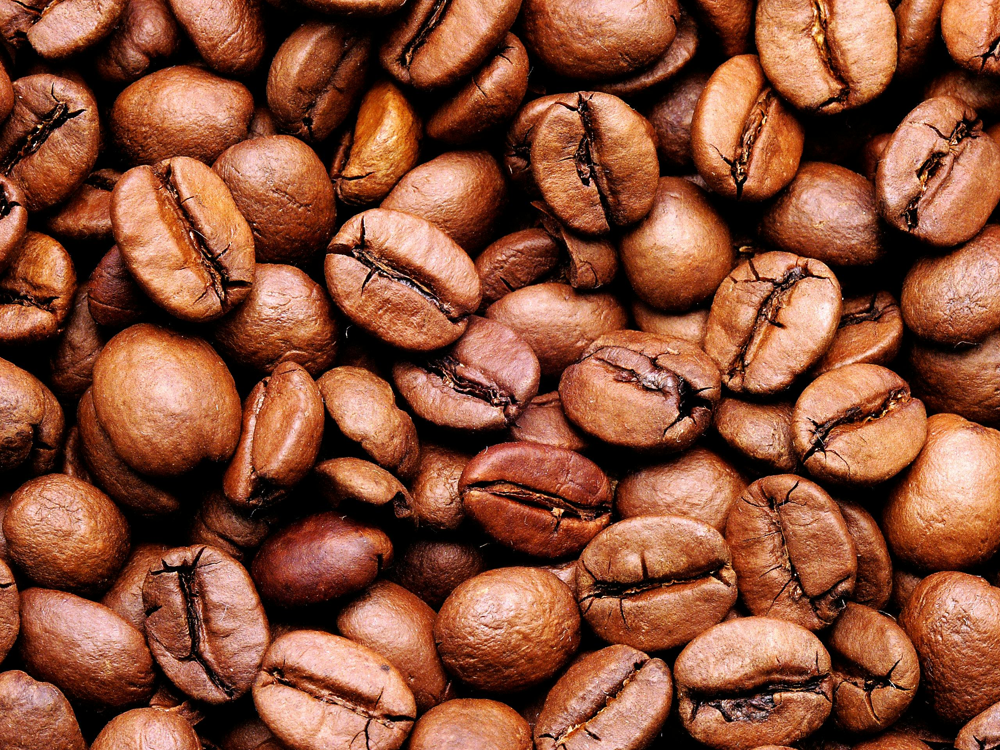
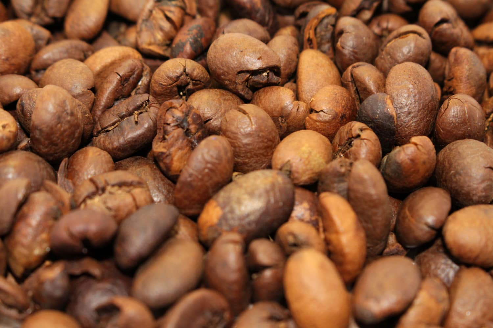
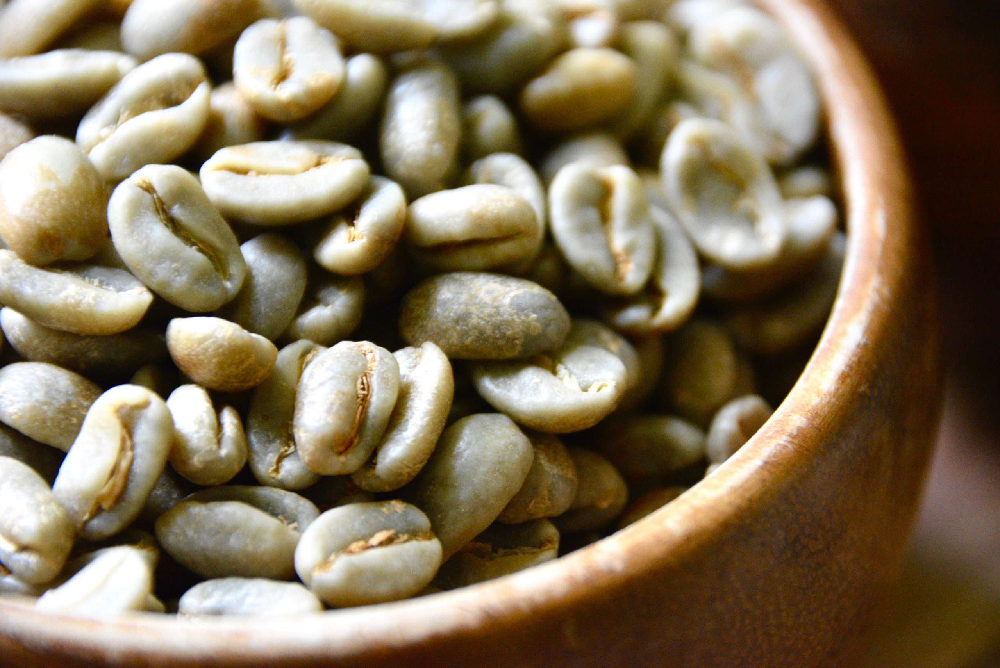

Coffee Bean types
Arabica
- Arabica beans are the most popular and widely consumed type of coffee bean, accounting for about 60-70% of the world's coffee production.
- Known for their smooth, mild flavor with a wide range of subtle and complex flavors, often including floral, fruity, and nutty notes.
- Typically have a lower caffeine content compared to other types, making them a preferred choice for those sensitive to caffeine.
- Grown at higher altitudes, usually above 2,000 feet, in cooler climates with ample rainfall and well-drained soil.
- Arabica plants are more susceptible to pests and diseases, requiring careful cultivation and maintenance.

Robusta
- Robusta beans are known for their strong, bold flavor with earthy and woody notes, often accompanied by a slightly bitter taste.
- These beans have a higher caffeine content compared to Arabica beans, making them a popular choice for espresso blends and instant coffee.
- Robusta plants are more resilient and resistant to pests and diseases, thriving in lower altitudes, warmer climates, and less fertile soil.
- Are often grown in regions with consistent temperatures and rainfall, such as parts of Africa, Southeast Asia, and Brazil.
- Typically cheaper to produce than Arabica beans due to their hardier nature and higher yields.

Liberica
- Liberica beans are one of the lesser-known and less commonly consumed types of coffee beans, representing a small fraction of the global coffee market.
- Have a distinctive flavor profile characterized by fruity and floral notes, often with a woody or smokey undertone.
- Are larger in size compared to Arabica and Robusta beans, with irregular shapes and asymmetrical cherries.
- Primarily grown in specific regions of West Africa, Southeast Asia, and the Philippines.
- Liberica plants are more resistant to certain pests and diseases compared to Arabica, but they require specific growing conditions, including high temperatures and humidity.

Excelsa
- Excelsa beans are less common and make up a smaller portion of the global coffee market compared to Arabica and Robusta.
- These beans are known for their unique flavor profile, which combines fruity and tart notes with a hint of smokiness and a touch of floral aroma.
- Excelsa beans are often used in specialty blends to add complexity and depth to the flavor profile.
- They are primarily grown in regions with high humidity and rainfall, such as parts of Southeast Asia, including the Philippines and Malaysia.
- Excelsa plants are relatively rare and have larger leaves and cherries compared to Arabica and Robusta plants.
